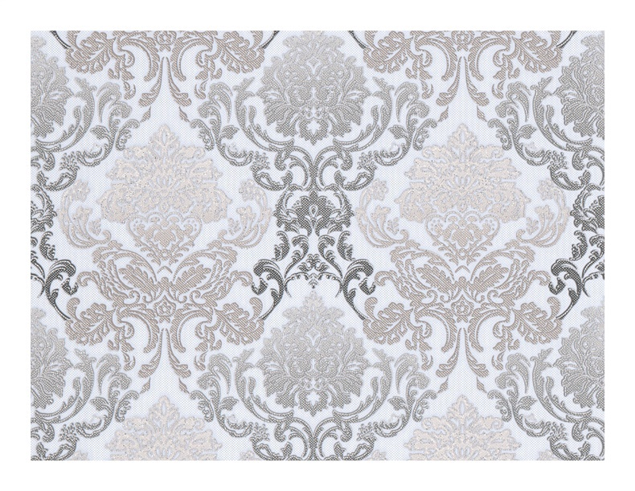

Tapetai | Platus įvairių tapetų pasirinkimas | Urmas
 +370 37 350 662 I-V 9:00-18:00 VI 9:00-17:00 VII 9:00-15:00 Prekybos miestelio planas lt en APIE URMĄInformacija Lankytojui
APIE URMĄ Naujienos Renginiai Darbo laikas Nedarbo dienos Lojalumo programa Vaistinės Bankomatai Kavinės / restoranai Privatumo politikaTurgūs
Centrinis Kauno turgus Naktinis turgus Tarptautinis senturgis „Laiko ratu” Bagažinių turgusPastatai
Geltonoji galerija Baltoji galerija Rytinė galerija Vakarinė galerija Raudonasis pasažas ,,Urmas station”Aktuali informacija
KONTAKTAI Stilius, mada Maisto klubas Karjera Įgyvendinti projektai Urmo geležinkelio stotis Prekybos miestelio planas Elektromobilių įkrovimo stotelės registracija VERSLUIVerslui
Prekybinių patalpų nuoma Sandėlių nuoma Reklamos paslaugos Kodėl Urmas? Faktai, skaičiai, statistika Lokacija, vieta Urmo radijas KONTAKTAI Menu Skip to content Akcijos Naujienos Turgūs Renginiai Prekių katalogas ParduotuvėsTapetai
Pradinis / statybines-prekes / Tapetai
Viena geriausių apdailos medžiagų , kuria galima ne tik greitai, bet ir nesunkiai atnaujinti savo būstą, yra tapetai. Juos užklijuoti – labai paprasta, tad atnaujinti kambarį galėsite lengvai, net jei ir neturite patirties. Didelis mūsų tapetų katalogas suteiks galimybę išsirinkti gražiausias spalvas ir raštus. Prekybos miestelyje „Urmas“ madingas įvairių gamintojų tapetų kolekcijas siūlo net kelios parduotuvės.
Tapetų pirkimas – atsakingas darbas
Pasirinktos spalvos ir raštai turi būti priimtini visiems to būsto gyventojams, todėl rinktis tapetų paprastai ateinama su šeimos nariais. Pastebėta, kad vyresni žmonės mieliau renkasi pastelinius atspalvius, o jaunimui artimesni ryškių spalvų ir raštų sienų tapetai.
Siekiant pasirinkti tinkamai, vis dažniau į pagalbą pasitelkiamas ir interjero dizaineris. Profesionalo patarimas išties labai pravartus, kai siekiama maksimalaus rezultato. Šiandieninė sienų apmušalų pasiūla leidžia įgyvendinti beprotiškiausias idėjas:
tinkamai parinktais tapetais galima dekoruoti įvairios paskirties patalpas, ne tik sienas, bet ir lubas; savitas stilius gali būti kuriamas derinant skirtingus tapetus (skirtingos faktūros, rašto bei spalvos intensyvumo); norint optimaliai padidinti ar pamažinti erdvę taip pat galima naudoti tapetus.Spalvų pasirinkimui turėtų būti svarbus ir patalpos apšviestumas: dėl nuolatinės saulės šviesos tapetai gali atrodyti šviesesni.
Tapetų pasirinkimai
Sienų apmušalai turi daug rūšių: jie gali būti viniliniai (dažomi arba ne), tekstiliniai, popieriniai, šilkiniai, neaustinio pluošto, stiklo pluošto ir t.t. Šios medžiagos viena nuo kitos skiriasi tekstūra, patvarumu, todėl žiūrėdami ritinių juostų kolekcijas, atkreipkite dėmesį ne tik į atspalvius, raštus, bet ir į skirtingus parametrus. Vienas svarbiausių – plotis. Sienų tapetai gali būti nuo 53 cm iki 1 m pločio. Pavyzdžiui, vieno tapetų ritinio, priklausomai nuo jo pločio, gali pakakti 4, 5 ar 7 kvadratiniams metrams sienų išklijuoti.
Tapetų katalogas taip pat naudingas norint tarpusavyje lyginti, derinti bei rinktis tapetų raštus. Kiti svarbūs parametrai yra tapetų storis ir svoris. Klijuojant sunkesnius tapetus, ruošiami šiek tiek tirštesni klijai nei įprastai, jais rekomenduojama nutepti ne tik tapetų juostą, bet ir pačią sieną.
Galiausiai, labai svarbi pati medžiaga. Aukštos kokybės tapetai išsiskiria spalvų patvarumu, išlaiko spalvos intensyvumą, yra lengvai valomi. Atsiradusią dėmę ant tapetų paviršiaus galima nuvalyti drėgna šluoste. Tokia danga gali tarnauti daugelį metų.
Išskirtiniai pasirinkimai
Itin plačias sienų apdailos galimybes suteikia nauja tapetų rūšis – skystieji tapetai. Tai ekologiškas ir genialiai paprastas sprendimas: ant sienos klijuoti ne tapetų juostas, o tiesiog mentele užtepti paruoštą masę. Jokia papildoma paviršiaus apdaila nereikalinga.
Sukuriamą tekstūrą, sluoksnelio storį (1-3 mm) lemia tapetų masės sudėtis: medvilnė, šilkas, popierius ar kita. Sienų apdaila gali būti vienspalvė ar su įvairiaspalviais šilko siūleliais, blizgi, reljefiška ar glotni. Ji tinka bet kokiam paviršiui, taip pat ir nelygioms sienoms. Tokiais tapetais lengva paslėpti įvairius defektus. Be to sukietėjus medžiagai ant sienos, ji tampa maloni liesti, šilta, oras ir drėgmė praeina pro medžiagą („kvėpuoja“), taip pat skysti tapetai sugeria garsą.
Paprastai naudojama apdailos medžiaga – tai ne tik įdomios faktūros plokštumos, bet ir proga kurti įvairesnį sienų dekorą. Pavyzdžiui, vaikų kambaryje iš skystųjų tapetų ant sienų galima sukurti gyvūnų figūras. Lenkiškų, japoniškų, rusiškų, turkiškų skystųjų tapetų galimybių pavyzdžių galima pamatyti prekybos miestelyje „Urmas“.
Be kitų teigiamų savybių, skystieji tapetai išsiskiria praktiškumu. Jiems nebaisūs net keturkojų augintinių nagai. Sugadintas vietas tereikia sudrėkinti, ir defekto kaip nebuvę. Norint pakeisti sienų apdailą, senoji tiesiog nuplaunama.
Įdomus variantas yra fototapetai. Tai – pasiūlymas tiems, kurie nori kuriame nors kambaryje turėti įspūdingos apimties paveikslą. Tai širdžiai ir akims mielas vaizdas per visą sieną. Su tokiais tapetais galima uždengti duris, spintą ar kt. Galima išsirinkti fototapetų, tinkamų tiek miegamajam, tiek darbo ar jaunuolio kambariui.
Įvairūs tapetai Kaune laukia Jūsų prekybos miestelyje „Urmas“. Užsukite ir atnaujinkite namus!